(日記とか言うモノ)
CNでグレゴリーホラーショウを見る。
昔地上波の深夜帯でやってたときは、これの各話づつだったもので見逃してた回がいっぱいあったので、まとめて見れてよかった。ひとつながりで見ると、全体を通して一つの物語になっていて、まるで連作短編推理小説を読んだような気分。伏線とかちゃんとあったのね。
ステインよか好きかな。
知人がティーンエイジロボットの主題歌の着メロを作ったといって、くれた。
感激〜〜〜〜〜！！！！！
むほっ、さっそくケータイに入れて聞きまくり。最強にレア。
ああ、音系はまったく手がでないので、耳コピできたり、作れたり、楽器弾けたりするスキルには、無条件で尊敬してしまう。 前にはレンスピの曲ももらったし、うちのケータイどんどん強まってゆく〜。感謝。
ちなみにティーンエイジロボットのオープニングはここでキャプチャーが見れる。
相変わらず、帰れなかったり、徹夜したりする日々があったりなかったりするんですが、そんな私が最近ハマってるもの。それは漫画喫茶。
実は昔は「はあ、そんなものアホですか」とか思ってたんですが、最近の漫画喫茶ってすげえのね。
漫画とか読みたいやつは買ってるし、自分のものにならないのに金払うのもバカバカしいなんて思ってたし、昔、ためしに行ったときもなんか病院の待合い席にいるみたいで、あんまいい雰囲気じゃなかったし、だいたいそんなに読みたいものなんて揃えてなかった。
でも、今の漫画喫茶は「完全個室」「フリードリンク」「ネット光装備」「リクライニングチェア」といった感じにいつのまにかグレードアップされていた。
これが最高。特に完全個室にハイグレードなチェア。和む〜。安らぐ〜。
元々、徹夜続きでシャワーくらいあびたいよ、と思ったときに「漫画喫茶 シャワー付き」というのを目にして行ってみたのが最初。
そう、私がなにしに漫画喫茶いくかというと、仮眠しにだ！！！
仮眠にはちょうどいいんだよ。漫画はいまさら読みたいものなんてそうそうないし、読みたい漫画なんてそうそう置いてないんだもの。でも、あの一人の空間てのはいいねえ。やっぱり一人の時間って大好きなんだ、私って。忙しいのは我慢できるけど一人になれないのは我慢できない。いくら親しい仲間でも、いくら楽しい時間でも、どっかに一人の時間ができないと逃げ出したくなる。つくづく集団行動はとれない人間。はあ。
最近は漫画喫茶ゲラゲラ渋谷宇田川町支店が最強にお気に入り。最近の〜って言ってたけど、よくよく調べると店舗によってまちまちで、今時の漫画喫茶なら自分にとってどれでもいいわけでないのが判明。
その点ここの「ゆったりシート」はバッチグー。自分の基準は「個室」＆「寝やすい」ですから。 （漫画喫茶ゆうても普通の椅子や中途半端な個室のとかなんか行くきもおこらねえ。）
あと、ここはマイナーなコミックまで揃ってるのがいいね。
ん〜でも、最近よくわからんことが。最近の流行か、ペアシート、カップル席なんてのもあるんだけど、なんなのこれ？カップルで漫画喫茶きてどーすんのよ。なにすんのよ。だいたいうるせえし。
漫画喫茶は「寝るところ」だろボケ！
アマゾンに注文しておいたあれやこれややっと入手。
新作ビデオは、うん、なかなか楽しいね。このスピード感がやっぱりパワパフだよ。
前半・プリンセスのミッション・イン・ポッシブル
後半・PpGのスターウォーズ（惑星エンドア）
後半のハイスピードチェイスは単純な中にもイロイロ小ネタがあって楽しい。
バブルスの超音波攻撃とか、突き抜けた穴の跡がハートになってるとか。仕掛けられた罠と同じ方法で仕返しする、執念深いブロッサムとか（笑）
今回博士テンション高いなあ。出番は少ないけど。
英語のみで聞いてると、やっぱりバブルスのタラさんはうまいなあと。あの声のまま、ドスきかせたりできるんだもの。それにしても、あらためて聞いてみると、バターカップの声は英語・日本語ともにソックリだ。驚き。一番にてるんじゃないだろか。今回バブルスいっぱい喋るね。
DVDにはオマケ映像としてザ・ムービーと同じように、デクスターも収録されていたようだが、ビデオ版はパワパフのみ。まあ、デクスターならいいか。（すまん、デスクターにはそれほど愛はない。ディーディースペシャルとかだったら考えるけど）
久々の新作！ってことで、もっとそのことで感動するかと思ったら、そうでもなかった。多分毎月コミックを読んでいるせいなんじゃないかと思う。なんだかんだで毎月彼女たちには会ってるからねえ。多分他の人よりPpGにおける飢餓感は少ないんじゃなかろうか。
で、コミックTPBだ。
すでにアメコミ屋で見たときは「ちっちゃ〜」って思ったけど、今手に持ってみるとちょうどいい感じ。ちょうど日本のマンガ単行本の「新書本」サイズに近いので、収納が楽だし。1冊112pなので、ちょうど日本の単行本の半分くらいのページ数になるのかな。
早く次の号がでないかなあ。でも、もうちょっと先みたい。
巻末を見ると、予告として「Scooby-Do」「Justice League」「Cartoon Cartoons」とある。スクービーは出ることが予定されているから、その次はジャスティスリーグか。そしてカートゥーンカートゥーンズ。＜これ気になる。
移転後のこの新しいサーバーのカウンターって、アクセス解析もセットでついてるんだよね。高機能版も提供してるけど、この標準のものだけで十分。
で、なんとなく気まぐれで解析をみてたら・・・・・ドキっとしました。
生き霊を見たというか、そんなかんじ。リファラーに見覚えのあるURLが・・・でもそのURLはすでに無くなってるはず・・・
はははははは、そうか、そうなのか。とても嬉しくなってしましました。とりあえずまだリンクはしないけど、心にはしっかりと刻みつけておくことに。
そんなわけで、他のサイトをリンク追加した。（どーいう理屈だ？）
今回リンクしたびりむさんの「ミンナノがるず」「PPG版ふしぎの国のアリス」はすごいね。内容もまあそうなんだけど、webでの見せ方というのがすごくいい。こんな見せ方があったなんて！と少しショックを受けた。
ただ絵を描くだけじゃなく、それをどう見せるか。そこまで考える人は少ない。考えたとしてもスマートな形になるとは限らない。いやね、webでの見せ方っていつも悩むとこなんで。
コミックレビューも更新。なにげにChristopher Cookさん、今回執筆回数でフィルモイと並ぶ。途中参戦ながらも怒濤の追い上げでここまでくるとはねえ。ペンシラーは「Christopher Cook」「Philip Moy」「Ricardo Garcia Fuentes」の3強時代に突入。さてどうなることやら。とか言ってるのはきっとワシだけ（笑）
TAMALA2010見た。(関係ないけど、こーいうとこのサイトの日記って「日記」じゃねーよなあ。）
これもflashアニメなのかな？と思ったら、イラレで描いてAfter
Effectsで動かすってやつだった。3DはLightWaveか。
スーパーミルクチャン以降、この手のタイプが増えてきたような気がします。デジガールとか。ツールの発達によって、従来のアニメ畑ではないところから、ひょっとこーいうのが出てくるのは面白いね。
ただ、この手のにありがちな「平面的な構成」「ステージのようなカメラワーク（平行移動）」「デフォルメされない中割（緩急のない動き）」「使い回しの絵や動き」ってのが目についたけど。
でも、手塚治虫が日本のアニメに超リミテッドアニメの手法を取り入れた時から「これはこれでOK」なことになってるから、それはそれでいいんだろう。物語を語るのに「動いてなくても語れる」って方向で日本のアニメは進化してきたんだろうから。それにしても、そーいう制約の中で成熟してきたリミテッド職人技、「少ない枚数でダイナミックな動きを見せる」といった技術の流れから完全にはずれてるね。あの技術の蓄積はなんだったのか？意味なかったのか？
まあ、それはそれ。ってことかね。実際動かなくても面白いものはいっぱいあるからね。「クロ高」とか「ホムビ」とか。
話はのめりこめなかったけど、それなりに面白かった。後半の急展開からがなかなか。まあ、これまたありがちな「世界観重視型」のノリがちょっとしつこかったけど。
シェンムーは・・・・・
とりあえず、これの制作に映画とか関わってた人いたのかなあって。なんか演出とかがさあ、こう、もそっとしてて単調なんだよなあ。ゲームの1カットムービーならいいかもしれないけど。ちと辛かった。
ゲームだとそれまでに「自分」が参加してるから「のめり込み度」がそもそもからして違うんだよね。メディアが違うときっと演出や方法論がまるで違うんだなあと、ちょっと実感。
忙しくてすっかり忘れてたけど、TAMALA2010がチャンネルNECOでやってたんだよ。完全に忘れてたよ。でも、なんとか明日の25日には間に合ってよかったよかった。一応「シェンムー･ザ・ムービー」（笑）もチェックしとくかな、見る機会が今後あるかどうかあやしいから。
なにげに見逃してること多いけど、このチャンネルはけっこう見逃せないんだよねえ。方向性はよくわからないんだけど、文芸座とか武蔵野館みたいないわゆる二番館的な雰囲気がプンプンしてていいんだよね。昔はよく通ったものだ・・・・
CSのチャンネルといえば、ガイドブック見るといよいよディズニーチャンネル開始ですね。デカデカと特集組まれてる。さすがビッグネーム。とりあえす11月放送分は無料か。一応見てみるかな。気になるのは「キム・ポッシブル」くらいなんだけど、なあ・・・あ、「恐竜家族」もやるのか（笑）これってディズニーだったのか！恐竜版フリントストーン。ていうか恐竜版シンプソンズか？ていうか、向こうのホームコメディってなんかパターン一緒だよ。
それにしても、「蒸気船ウイリー」で放送開始ってとこがあざといね。
ん、ベスト・キット4やるのか。今度は女の子がカラテやるぞ！
つーかね、どうせならアニメ版カラテキッドやってくださいよ。別に内容とかどーでもいいし、それほど興味ないんだけど、「My Life as a Teenage
Robot」Jenny役のJanice KawayeさんがTaki役で声あててるの！それだけ聞きたくて。(ふふふ、MLTRの新作もいまごろアメリカでは公開されてるはずだ）
Janice Kawayeといえば、よーく調べてみると、XJシリーズ勢揃いの時の話に出てくる赤ちゃんロボXJ-1もそうらしい。うわ、聞きてえ。はっ、インベーダージムにも出てたんですね！
話それたけど、ディズニーチャンネル対策としてCNはバッチリのような気がします。ディズニーチャンネルも見ても、乗り換えるって人はほとんどいないんじゃなかろうか。キム・ポッシブル対策としてトータリー・スパイズも始まるし（笑）でも、ここんとこのCNの動き見てるとかなりディズニーチャンネルを意識してる気もするので、本格化するクリスマスシーズンである12月にCNは巨大な隠し玉を用意している気がしてならない。冬休みだし。視聴者としては大喜びだがね。競い合うことはいいことだ。
問題はニックか・・・まだサイトも始動してないし、大丈夫か？
一応11月の目玉はラグラッツの新エピ開始か・・・微妙。あっ！新番組が！「マペット放送局」！！！！
・・・・・・かなり好きな人もいるだろうけど、微妙といえば微妙。でもこういう有名人ゲスト番組がOKなら、CNでもSGC2Cもやって欲しいなあ・・・
全然関係ないけど米ニコロデオンでも日本のアニメを流していた時期があったみたいで、ってどうも去年の話らしいのだが・・・リメイク版「マッハGoGoGo（1997）」。このリメイク版って日本でも全然聞いたことないけど、やっぱあっちでもウケなかったのかなあ。
あれ？まだ木曜日。濃密な時間を過ごしてきたせいか、とっくに一週間くらい過ぎた感覚。
アマゾンからの荷物・・・どーなっちゃったのかな〜？「不在通知」がいっぱいポストにはいってたけど、全然連絡してないから送り返されちゃった？
まあそれはさておき、コミックスの新刊は入手。むむむ今回は・・・・
ちょっと藤子FのSF短編を思わせるようなプロットだが、いかんせんPpGとは合ってない感じ。表現もおいついてないかな〜。おもいきったブチヌキとかメリハリあるコマ運びが欲しかった。
ここんとこ低調ぎみだが大丈夫か？コミックス班。とりあえず、次回の「Sean Carolan & Jennifer Moore」と「Philip
Moy」の黄金ペアに期待するか。
表紙はちゃんと修正されてたね。
アニメ版の方のスターファイヤーがマケット化するのには驚いたが、まあロビンは別シリーズでも立体化してるし、人気からすると順当なとこか。これ第二弾が出るとすると、次はロビンかレイヴンってとこかな？意表をついてサイボーグだったりして。マッチョ好きそうだし。
今月末に「TEEN
TITANS/OUTSIDERS SECRET FILES 2003」が出るんだが、こちらは従来のアメコミ版のほう。この表紙を見ただけで、おおきくデザインが変化したのがスターファイヤーだとわかる。ムチムチボディのお姉さまから、スレンダーボディの今時っ娘に。やっぱセーラームーンとかのデザインを意識してるんだろうか？
意外にナイスバディなレイヴンですが、これはあんまり原作絵とは変わってないね。
11月末にはいよいよこのアニメ版TTのコミックスもでますね。忘れないようにせねば。
でも、これの＃３の表紙は・・・ちょっと引いたかも。こういうタッチは苦手。なんかNinja
High Schoolみたいになってもなあ・・・
来月にはいよいよカートゥーン系コミックスTPBの第二弾としてスクービードゥが出ますね。巻数からいくと次はルーニートゥーンあたりかな。
はやくニコロデオンのwebサイトがオープンしないかと気になる毎日。気になるといえば、ここのタイトルが「ニコロディオン」てこと。なぜ舌をまく？
ようやく、モーターショーも開幕して、私の仕事もここまで。日曜以来やっと家に帰ってこれました。ていうか、やっとパンツ履き替えられる・・・・夏じゃなくて本当によかった（泣
散々だったグチでもここに書き連ねようかと思ったけど、気力はすっかり減退していてそれすらムリそうなんで、とりあえずは寝る。いや、寝かせて〜！なにしろ土曜からこれまで一睡もしてないんスよ。（10分程度の仮眠は何回かしたが）
まあ、でもタダでしかもゆっくりとかつ裏までモーターショーを見れたのはちょっと楽しかったかな。ニッサンの和風仕上げ自動車は凄かったなあ。
幕張メッセ会場で無線LANが使えたのは便利だった。あれって、元々あった無料ホットスポットなんだろうか？だれもその存在を知らなかったのにはもっと驚いたが。
あ、また睡魔が。ハイ＞ダウナー＞睡魔のサイクルが短くなってきたことを自覚。とりあえずまずはこの狂った身体サイクルをなんとかせねば。なにしろ、このせいで貯まりまくってる仕事が明日から待ち受けているからだっ！（大泣
最近読んだ本が「吼えよペン」でよかった。漢はつらい時こそ不敵に笑うものだぁ！！！！！
これがねこじるとか華倫変とかのダウナー系だったら、やばかったかも（笑）
ガールズの新刊、やっぱり買いにゆくヒマなし。
スペインの自転車レースヴェルタ・エスパーニャも終わり、あとは世界選手権か。
夏に「アンダルシアの夏」が公開されたんだけど、その効果はあったのかなあ？解説者は盛り上がってたようだけど、普通の人はなじみのないロードレースよか日本シリーズだよなあ。
アマゾンで頼んだブツのうち、本のたぐいはメール便だったので、郵便受けでゲット。ビデオを受け取れる日はいつくるやら。まあ、ゲットしても今は本も読むヒマないけど。
今日はこの日のために買ったwinノートが大活躍。やっぱ軽いっていいな。
出先のネットワーク借りて使ったけど、やっぱ光は早いわ。複数で使用すると実測はADSLとあんま変わらないみたいな話しもあったけど、いやいやとんでもない。あれだ、アナログ56kとISDN64kでは数値的にはそうかわりながいように見えるけどISDNのほうがキビキビしてるのといっしょな感じ。スパっスパっと繋がるのは体感的にも気持ちいい。
とりあえず、これが終わったら、XPをオレ様仕様にカスタマイズしてやる。重くて使いにくいインターフェースもこれでおさらばさ。ヘンなソフトもいっぱいいれてやる〜。
話は変わるが、ずーっと前にCNでやってたという（見てないんだこれが）フライっておフランスのマンガだったんですね。この人のコミックよみてえなあ。
ここへ行けばとりあえす見れるんだが、かなり遠い・・・・
だいたい、バンド・デシネって高すぎるんだよなあ。
ビリマンがリピートにはいった様子。
夜はninjaで「ご先祖様万々歳」がやっている。
うーん、これはやっぱ好きだなあ。時空を越えた壮大な設定にもかかわらず、やっているのはお茶の間ドタバタ。世界は広大でもしょせん人間は目の見えるとこでしか認識はできない。そんな小さな箱庭的宇宙。音楽もいい。
しかし、カートゥーンネットワークでやるってのはどうしても異物感があるのは仕方がないやね。
押井守といえば、イノセンスももうじきか。どこまで進んでいるか分からないけど、楽しみだ。TV版攻殻も一段落るいてことで、攻殻スタッフ合流で一気に進むかな？
イノセンスといえば、プロダクション I.G。現在、その総力を結集して作られてる「魁！！クロマティ高校」はすげえよなあ。（ここ、笑うとこ！）それにしてもホントに動かないアニメだ。忙しいのに引き受けたわけがわかったよ（笑）・・・・・・・いや好きだが。そーいえば、FLCLもここだったっけ。この間見たら昔見た時よか面白かった。
ていうか、バンパイヤン・キッズもここだったのね・・・これはけっこう好きだったなあ。カートゥーンぽくて。だって主役の声が「愛川欽也」なんだもの！！！「やーんなったう」。まあママさんが好きだったんだけどね。（この時はCNにも加入してなくて、カートゥーンにもハマっていなかったんだけど、潜在的に好きだったのかもしれない。裏のカスミンはほとんど見てなかったし）
で、プロダクション I.Gといえば、実はいつも楽しみにしているコラムがあって、「デジアナぶいぶい」
ここのプロダクションだけかもしれないけど、「エフェクト」という専門の担当があって、「エフェクト」の人が書いている。アニメにおけるデジタルの活用の試行錯誤の歴史がかいま見えておもしろいのだ。「エフェクト」なんていう担当もデジタル化によって生まれた職なんだろうか？とも思える。
とくにハッとしたのは第14回。「エフェクト」の部分だけとはいえ、この人コマ一枚一枚を「描いてる」。デジタルっていってもほとんど手作業。気が遠くなる・・・かと思いきや、「1枚を1分程度」とか軽く言ってる。違う世界をかいま見た一瞬でした。
しかも、止まった一枚の絵に対して「私に限らずアニメーター上がりの人間は実際に映像を見なくても，どんな動きになるかはだいたいわかるものです．」
アニメーターってスゲエなあと思った。
それはともかく、モーターショーの仕込み期間に入って、いよいよ明日から修羅場に突入。果たして布団で眠れる日があるのかもの凄く不安です。ガールズの新刊買いにゆくヒマね〜〜。ていうかアマゾンからの宅配便を受け取るヒマも・・・・
アマゾンからいっぱいメールが来ました。
新作ビデオと、コミックTPB、ほか諸々「送ったよ〜」ってことなんですが、これらはまったく別々の日に注文したやつなんですよね。それがなぜか送るのは一緒の日になったという謎な展開。だから、一度にまとまって送られるのではなく、何回も宅配便屋が来るというヘンなことに。
パワパフ関連だけならともかく、ずーっと前に注文してたアメコミやらもなぜか一緒の日に重なるってのは、偶然にしてもすごいな。アマゾン側でなんかあったのか？とも思いたくなる。
注文したのは、
PpGの新作ビデオとその絵本
コミックTPB １、２巻
ヴァスケスの本
ウサギ用心棒の2巻
ゴスなアメコミ
セガのゲームは世界一 １、２巻（結局買っちゃいました。よく考えたらワシもセガ者だし）
ニッポンマンガ論＋アメリカで日本にアニメはどう見られてきたか
これが全部別々の便で同日にくる。中には注文したのをすっかり忘れてたものもあった。
こーいうこともあるんだなあ・・・
映画は総合芸術である。
なんていうけど、アニメもだよねえ。美術の世界じゃ建築も総合芸術。まあ、関わった人数が多いかってことであって、価値は別物なのはいうまでもない。
ま、それはともかく、アニメはいろんな人がかかわってる。話作る人もいりゃ、キャラクターデザインをおこす人もいる。で、背景を描く人もいるわけだ。デキのいいアニメってのは背景もいいもんで、ま、そんなわけで
パワパフムービーとかの背景を描いていたお方。デクスターとかもやってる。ミーナと伯爵もやってるね。Robさんに引き抜かれたか、最近のお仕事はティーンエイジロボット！
ああっ、あのカッサンドル風の素敵な背景を描かれていたのはこの人だったんだ！と、すこし感動。でもその最近の作品がのってないのがちょっと残念。
背景って大事！ 一人でお絵かき落書きしてると、背景なんて省略どころかはなから描く気すらなんだけど、きっと背景って大事なんだよ。多分な。
この人の普通の絵もめちゃめちゃキュートでいいですなあ。
で、全然話はかわるんだけども、裏（？）の掲示板でちょっと話に出た「バストフレモン」を調べてみたら、なんか変な感じに話題になったてるみたいで、ちょっとだけみてみたい気分に。多分1回で十分だと思うけど・・・・
その流れでネットサーフィン（死語ですか？）してると、なんだか地上波ってアニメも新作ラッシュなんですか？CNが新作がどーのとか言ってたけど、やっぱり日本のアニメの生産状況はものすごいですな。ついてけません。
この「瓶詰妖精」とかいうのはなんなんでしょうか？思わず夢野久作の「瓶詰地獄」とその映画版（←これも別の意味で凄かった〜）を思い出してしまって、どーなってんだ日本のアニメは！！？とか思ったけど、いわゆるその手のアレだったんで、まあ失望したやらほっとしたやら。
そういえば、来年には「ローブロウ」が始まるんだったっけか。すっかり眼中になくて忘れてたよ。まあ、あれはあれで、シリーズで見たら面白いのかも。そーかああ？
まあ、勝手にCNスケジュールを妄想するのもほどほどにして、ひとまずは公式発表でも見ときますか。
とりあえずの目玉はやっぱりスターウォーズですな。
毎週（月）〜（金）18:55〜19:00 ほか
短っ！！！！！ なんか宇宙飛行士ユーリが注目されるような感覚・・・チェックしやすいのかしにくいのか。HDレコーディングならともかく、リニアなビデオ録画派には大変そうだ。コレってばどんなペースでやるんだろうか？
だいたいこんな時間でストーリーモノとか区切りつけていけるのか、そーいうとこも興味深い。
クラッチ・カーゴのように毎回「危機一髪」みたいなとこで終わって、次見たら「なんともありませんでした」みたいな腰砕けなノリだったらどーしよう（笑）
あとは・・・
「トムとジェリー」連続6時間放送・・・・・・・は、いいとして
タンタンの冒険とトータリースパイズ！ですかね。
タンタンけっこうはけっこうはまるとどっぷりハマル人が多いらしいです。実はビデオで何本かみたことあるんだけど、あれは長編シリーズのやつなんだろうか？今回のやつはどいういうやつなのかちょっと気になる。中国人の男の子が出てくる話とかやるかなあ。たしか原作は1929年発表、アニメの「ビーカー教授」が1964年だったと思うが、クレジットを見ると1992年。最近始まったTVシリーズとかあるのかな。まあこのへんのクレジットってあてにならないからなんともいえないけど。
放送は・・・毎日。これまた放送ペースがつかめないにゃあ。
トータリースパイズ！、日本チックアニメってことでTeenTaitansの前哨戦となるか？
たしか本国フランスでは3シーズン目が制作中だったはずだから、やっぱり向こうは1年で1シーズン（13話）ペースなのかな。日本のアニメーターがうらやましがりそうなペースですね。で、こちらでは何話やるんだろ。2シーズン分やるかな？とりあえず1シーズン分（地上波でやった分）だけって気もするけど。
これまた毎日かよ〜。放送ペースわかんねえええええ。
まあ、とりあえずチェックしときますか。なにしろ「日本オタク大賞 眠田直賞」 受賞作品だしな（笑）
で、また「グルーヴ・スカッド」やるんかい！人気・・・あるのか？いつものカットと違うけど、別に新作ってわけじゃないんだろうなあ。最近DIC製アニメが多くなってきたね。怪傑ゾロもそうだし。セーラームーン逆輸入版もまじかか！
11月の話になっちゃってるけど、今月末はハロウィンがらみでキャスパーも始まるんだ。ああ、やっぱ凄いペースだCN。タンタンも始まったことで、マジ世界中のめぼしいアニメがほぼ一同に集合。著名な作品で世界のとなると、もう思いつかなくなってきたよ。あとはスウェーデン版ムーミンくらい？ネッズニュートが復活すると、ドイツ参戦で凄いことになるんだが・・・アニメワールドカップかよっ！
日本アニメを積極的に放送しているアメリカCNと比べるとちょっと対称的かも。
ハロウィンといえば、むこうはクリスマスとハロウィンはやっぱり特別なのか、スペシャル作ることが多いよね。
カートゥーンカートゥーンズの系統はそのわりにこの手のスペシャルが少ないと思ってたけど、パワパフの新作ビデオは「クリスマス」だし、ジョニーもあるらしいってことで、これから増えてゆくのかも。
ニックでは多いんだけどねえ。
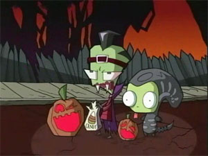
で、なぜかインベーダージムのハロウィンスペシャルとか貼ってみたり。
あ、チャンネル質問箱にパワパフの質問が。
ふふふ、うまく逃げやがったな・・・・CNめ。
ビリマンを見て思ったこと。
ビリマンが本国で始まったのは2001年8月。で、この間やった「混乱の肉ダンゴ」こと「チキンボールZ」なんかアメリカで放映されたのは2003年8月。つまりこのくらい貯まるまで2年かかっている。
それが日本では数ヶ月で追いついてしまった。
で、さらによーく調べてみると、日本でビリマン放送開始が8/2。チキンボールは8/15。
つまり、日本で始まった時点ではまだ放送されてなかったってこと！
このペースはなんなんだ？見切り発車で順次アフレコしていったのか？それとも八月初旬ではすでにフィルムは完成していて放送前にすでに日本にきていたのか？
そのへんのとこはわからんのだが、ここでいえるのはイケルと思った新作はガンガンいっちゃうってことですね。
こっからは推理と希望的推測なんだが、新作の場合、2シーズン分（26回分）のエピソードが貯まると日本で放映される可能性がかなり高いってことだ。これは実際に26回分放送されてなくとも、その分が消化できる見込みがついたらやっちまうってことでもある。（ビリマンの例にあてはまるなら）
また、デクスターやホムビのようにすでに放送されている場合、13回（1シーズン）貯まると日本でも公開される。このあたりは他の新作なんかのかねあいもあって、多少放送のタイミングをはかってる部分もあるだろうけど。
と、するとだ。
パワパフの場合、
1） Keane on Keane/Not So Awesome Blossom
2） Power-noia
3） Monstra-City/Shut The Pup Up
4） Toast of the Town/Divide And Conquer
5） Burglar Alarmed/Shotgun Wedding
6） Save Mojo/Substitute Creatur
の6本がすでに公開されており、さらに11月に
7） The Boys Are Back in Town
8） Pee Pee G's / Boys Toys
が予定されている。
これにくわえ、なぜかアメリカでは公開されていないのにイギリスでは公開されたという噂の
Nuthin' Special
Neighbour Hood
I See A Funny Cartoon In Your Future
Octi-Gone
の4本がある。全部足すと12本！ただ、イギリスでのやつはそれがまるまる1本かどうかわからないので、それぞれハーフと少な目に見積もってみると、10本。あと3本。微妙・・・最近発売されたビデオスペシャルをファンの願望としては加えたいとこだが、ちょっと可能性が低いし筋違いな気もしないでもないので、これは別物とする。
12月に3本ほど流される予定があれば、アメリカで未放送でも年末には日本でもパワパフ新作が来る！！
ただ、今までのペース配分からするとちょっときつそうな気がするので、12月、1月で全13回分貯まると仮定する。
願望混じりまくりのスカポン太の予測。
大晦日にクリスマススペシャル！
そして新年に新作一挙公開のパワパフ祭り開催！！！！！ 年越し大パワパフ祭り！これだ！
ついでにTeenTaitansも予測してみよう。すでに未公開ながらも日本で盛り上がっていることをCNが知ってるかどうかはわからんが、ちゃんと目をつけていることは間違いないだろう。ホムビのように1シーズンから始まる場合もないわけではないが、それならすでになんらかの動きが見えているだろうが、そんなものはないので、これは2シーズン分貯まったら来るものと仮定する。特にトータリースパイズももうじき始まるだけにタイミングとしてはもうちょっと先って気がする。
TeenTaitansはカートゥーンには珍しくペースが早く、もうじき1シーズン分が貯まる。このペースでいくと年内に2シーズン分くらい貯まりそうだ。しかし、1月にはパワパフがあるので、ややタイミングをずらし、2月！
2004 年2月にTeenTaitans日本放映！
11月はスターウォーズが始まるので、11月の目玉はこれだろう。
と、すると12月は？
サムライジャック新エピソード！これだ！
では新シリーズはないのか？ いや、きっとアレが来る。
Codename: Kids Next Door
これは現在11月までに21エピソードが予定されている。ちょっと全26エピソードにはキツイかもしれないが、2シーズンになってから（10月から）は週１ペースで公開されているので、このペースでいけば・・・間に合う！
整理してみよう。
11月スターウォーズ
12月KND サムライジャック
04/1月 パワパフ
2月 TeenTaitans
ふふふふふ・・・なんて幸せな日々なんだ・・・・・
カンボックス情報を探していたらこんなとこ発見。
添付してある画像の情報に、さりげなく気になる情報が。
ジョイフルのキャンペーン期間は今年の12月までか？
そんでもって予定では冬のCMもあるみたい。どこに情報が転がってるかわからんものだ。
とりあえず、アップ漏れはなかったかな？
全体の総量自体はたいしたことないんだけど、細かなファイルが山のようにあるから、意外に時間がかかったなり。少しづつの更新でもチリもつもればなんとやら。ばかにできません。
久々に親のとこよってたら「あるある大辞典」やってた。
まだやってたんだこの番組。サプリメントですか。不規則生活の不規則食事野郎には興味深い話。
・・・・でもない。うーん、不足しがちなのはわかってるんだけど、どーも手が出ないんだよなあ。
徹夜をのりきるためのドーピング系ドリンクとかはたまに使用するけど、あのへんのものはどうにも。
なんか損してるというか、お得感がないというか、「おいしくないもの」をわざわざ食べるというのには、そもそも興味がわきずらい。
でもサプリとかって、RPGみたいだね。体力回復にはこのクスリ、毒の中和には・・・、筋力アップ、俊敏性アップ、魔力の回復、とかそういうのと一緒な感じ。あれ、ゲームみたいに自分の身体のパラメータが表示されて、サプリを投与するといろんなパラメータが上昇する、なんて感じにできたら面白いんだろうな。いや、はまってる人はもうそういう感覚なんじゃなかろうか。
実際、人間ドックいってこれだけ数値がよくなったんですよ！とかぬかしてたやつもいたし。
自分の身体健康育成ゲーム。
こういう病んだ現代人って嫌いじゃないよ。
それにしても無線LANが調子悪い。アクセスポイント起動させて30分がリミットか。まあこれ欠陥品なのはわかってるから、そろそろ買い換え時なのかも。
10月12日付けで、サイトを移転してみました。
またinfoseekでメンテナンスするっていうので、そういうの面倒くさくなったし、この切り替えが終わるとあの恐怖のポップアップ＋埋め込みの二重広告が始まりそうなんで、潮時かと。
ホントはこれを機会に大リニューアルしようかとも思っていたんだけど、そう思うとなかなか作業が進まないので、あきらめてそのまま移転。
完璧主義者はwebには向かない。適度に妥協することこそがweb運営の長生きの道。
それでも、なんにもかわらんというのもなんなので、ギャラリーを復活してみた。以前容量不足で消滅したやつ。
綺麗な絵も好きだけど、自分がやるとなるとやっぱりわずかでも「物語性」のある絵を描くことが多い。これは好みの問題なんだろうけど、記念撮影的な絵はどうもものたりないんだよねえ。
絵を描くというのはそれなりにパワーを必要とするもので、たまに「描けなくなる」というスランプに陥ることがある。この場合のスランプには2種類あって、
1.描きたいけど、うまく描けない
2.描きたいものがない
１は自分の理想の絵が頭にはあるんだけど、それが自分の力で理想の「絵」にならない苦しみ。これはもどかしい。技術が未熟ってことが大きいんだけど、絵を描くってことはそれだけじゃなくて、モチベーションにもよるからなんとも言えない。勢いづいてる時って技術は追いつかなくてもそのままイケちゃうんだよなあ。考えない絵ってのはあまり好きじゃないけど、考えすぎるのも問題だ。
2はどーしようもない。これこそ真の「描けない状態」。
あんがい精神状態が安定しているときほどなりやすい気がする。相反するかもしれないけど、クリエイターにとっては「幸せ」は毒なのかも。まあ、普通の人にはそれはそれで幸せな状態なんでムリして追いつめなくてもいいと思うけどね。
絵にかかわらず、形にするアイディアやネタを作るって作業が一番大変なことなんだよ。あとは極端なこと言えば作業だ。だから、気楽に「ここにカットいれてよ」とか言うな〜〜！おまえだ！おまえ。お仕事無意味に増えた・・・・・・トホホ（最後はグチかよ）
アニメ評論家っているのかなあ？って前の日記に書いてたけど、いるようだ。
たとえば、藤津亮太氏
11月に『「アニメ評論家」宣言』なる本が出るらしい。
一応氏の日記内に目次が載っているが、やはりというか、当然というか「海外アニメ」の話はまったくなさそうだ。まあ月に70本近く放映される日本アニメを追うだけで一苦労って気もしないでもないけど。それに、海外アニメについてなんて発表する場なんかないだろうしね。（オーダーもめったにないだろう）
眠田氏なんかは早くからパワパフに注目していてコラムかなにかで、ちょくちょく話には出るけど、評論で喰ってるわけでもないだろうし。やはりかなりマイナーな職であることは間違いないだろうなあ。
・・・と、思ったけど、よーく考えたら、アニメ雑誌などまったく読んでないのに気が付いた。それじゃ存在していても知らないだけだな。自分の無知に反省。
それはさておき、BBSで報告のあった「昴」確認のため友人から借りた。
すぐにパワパフの看板は見つけられたけど・・・・読むほうに夢中になってしまったり。
曽田正人は好きなんだが、「昴」は連載時に読んだときには、しょっぱなから「奇跡」の連続で、どうも「凄い」のインフレをおこしかけている気がして、他の作品よりそれほど好きでもなかった。でも、まとめて読むとけっこう印象が違って感じておもしろいね。
どこかのインタビューで「昴」はアイルトン・セナだ、と言っていた。ようするに「天才」の話なんだと。今までもそうじゃなかったのかよ！と思ったが、そうではないらしい。一人で世界が終わってるし、ダレも必要としない話。感情移入しにくいキャラであるのもあえて分かっている、とも言っていたと思う。たしかに通り過ぎたあとはみんなボロボロになっている気がするなあ。まさに天災。そいうった記事を読んでいたからかもしれない、また違った視点で楽しく読めた。
でね、この友人が貸してくれた本は「昴」だけじゃなかったんだよなあ。こいつテンション高いマンガが好きなのか、もう1シリーズは「吼えろペン」
これは、とびとびに雑誌で読んでいただけで、まとめて読んではいなかったんだけど・・・・
やっぱり面白すぎ。面白すぎて・・・笑えねえよお（泣）
マンガ家さんとはまったく関係ない仕事だけど、スケジュールに追われるのはいっしょ。あのギリギリのところの「自分いいわけ」とかその他諸々の魂の台詞はジンと響きます。人ごとじゃなくて。
そういえば、たまにしか読んでなかったわりに影響されていたのか、それとも追いつめられると似たような心理になるものなのか。
「あえて、寝る！」「あえて、遊ぶ！」
それにつけても、富士鷹ジュビロ先生最凶におもしろすぎです。多分、あのまんまなんだろうなあ(笑)
なんだか微妙に仕事が遅れまくっていて、このままでいくと来週あたりに山のように重なり合って、死ぬんじゃないかと不安でおののく日々。
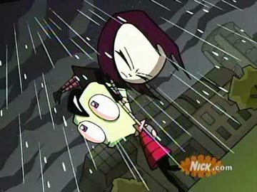
インベーダージムよーく調べてみると現在制作中止中。なんでもテロの影響でニックの検閲がけっこう厳しくなったことが直接の原因っぽい。それでニックと制作側が衝突。はあ。大ショック。
確かにヤバイ内容とかあるけどそれほどでのない。街を破壊したりするのがヤバイんだろうなあ。
そんなカートゥーンはいくらでもありそうだけど、ZIMは他の追随をゆるさないくらいの迫力があるんだよ。震えるくらいに。いかにも「物語的」なものだったらよかったんだろうけど、デキが良すぎたのが災いしたのか。
日本公開は・・・難しそうだなあ。
ビデオパッケージにもなってないないのが悲しい。かろうじてNickstravaganza 2という ニックごったまぜのやつにZIMの第一話が収録されているようだ。
ところで、日本のアニメ関係者って海外のアニメ作品をどれほどみているのだろうか？
なんだか全然みてないような気がしてならない。
一般視聴者はしかたがないとしても、それで大丈夫だろうか？向こうはこちらの想像以上に日本のアニメを見ている。そして研究もしている。ここ最近の米国のアニメは格段に進歩をとげている。
異文化との出会いによって文化は飛躍する。需要だけを考えれば、今のままでもいいかもしれないが、そのままでは内に内にこもっていくような作品ばかりになってはいきまいか。需要があるところに望まれる作品を作るという、幸せな循環もシステムとしてはいいが、その上をゆく突き抜けるような、ねじ伏せるような、そんな作品だって見たいんだ。（別に過激な作品とかいうんでなくて）
そーいえば、アニメ評論家っているのかなあ？
もしいたとしても、まともな評論家っていないんじゃないだろうか。映画にしても小説にしても音楽にしても、例外なく日本のものも海外のものも見ているし読んでいるし聞いているだずだ。でもアニメは？
日本のアニメは見ていて当然だろうが、では海外のものは？アートアニメは？すべてを見てそしてここから俯瞰で見れる視野をもった人などいるのだろうか。
・・・多分いそうだな。普通のファンですらそのくらいやってる人だっているんだもの。ただ、きっとそれを語るべき場が今はないのかもしれない。
あ〜、カートゥーンネットワークもそういう評論番組とかオリジナルでやってくんないかなあ。評論は難しいか、自社製品だし。だから解説番組でいい。深夜にこっそりとでいいから。昔は声優のインタビュー番組とかあったらしいじゃない、そーいうのもう一回復活しませんか。
むう、関係ないけど、最近無線LANの調子が悪いなあ。
思えば遠くへきたもんだ・・・
なんでもう、日本未公開ものばかりに惹かれるんだか・・・もう、あらゆるもの置いてけぼりにして、魂だけは米国の空を浮遊中。いや違う、違うぞ。未公開だから惹かれるんじゃなくて、最近のカートゥーンが素晴らしすぎるだけなんだよ！知ってしまったら、惹かれるのは当たり前の現象。
ていうか、「知るかバカ」
理屈なんてどーでもいい。楽しけりゃいいんだ、オレが。（ああ、マグワイヤーコーチは心の師です）
で、インベーダージムなわけだ。
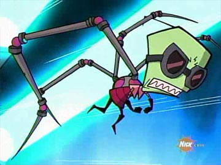
メカのギミックもカッコいい〜。
最近はトゥーンの法則も崩れてきているのか、やっぱりZIMも第一話から始まるようなんですね。
インベーダーの星でも問題児だったZIMは宇宙図にものってない惑星「地球」にほとんどやっかいばらいな感じでやってくる。そこで侵略計画のために一時地球人になりすまし、地下に秘密基地をもつ家に住む。偽装のためにパパママロボもいるんだけど、こいつらも狂ってる！
しかし、超自然現象マニアのDIBは正体を知ってるのだ。ZIMは邪悪なインベーダーだと。みんなには信用されなくて「キ○ガイ」扱いされるけどな。
そして日々「殺やらねば、殺られる」ZIMとDIBのシャレにならない死闘が繰りひろげられるのであった。いやマジで。なんかケロロ軍曹みたいな設定だけど、けっしてなれ合いにならないとこがスゲエよな。いつも殺伐、殺し合い。いやマジで。
ん〜、多分設定はこれで合ってると思う。
ところで気になるのはコレ。
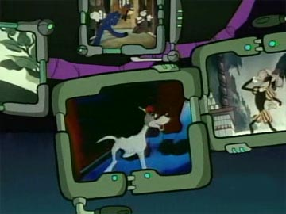
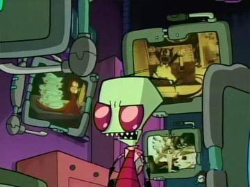
モニターに映ってる古そうなカートゥーンはなんなんだろうね？全然わからないや。
ところで、いよいよパワパフの新作ビデオが発売。いまだにDVDにしようかビデオにしようか迷ってる。
特典映像とか気になるじゃない。でもそれを吹っ飛ばすくらいアマゾンに入荷してるビデオってば、安いんだものなあ・・・安すぎて送料無料にならないくらい(笑) なやーむなあ。
とかアマゾンうろうろしてたら、ハロスプのペーパーバックが12月に！予約だ予約。
って、あああああ＃4買い忘れてた〜〜。これってTPBだよなあ、収録していてくれると嬉しいのだが。
webうろうろしてたらこんなサイト見つけた。
「映像作品ストリーミングサイトopenArtでは、2003年10月1日より、アートアニメーション特集を開催します。ドイツ、ポーランド、エストニア、アメリカ、ロシアなど海外からの作品の数々をはじめ、国内の珠玉の作品群を続々公開します。またシリーズ作品の連載式上映も、同時にスタート。」
世界のアートアニメが見ほうだい！しかも無料！しかも最大1Mbpsのデカ映像で！
さすがに大御所たちの作品はないけど、こーいうものの中に掘り出し物とかあるんだよねえ。そうでなくてもエストニアとかロシアの作品なんて普通みれない。まあ、リストを良く見れば日本人作家ばかりなんだが、日本じゃショートアニメって発表の場がほとんどないから、いいことだ。非商業系をいっしょくたにして「アートアニメ」って言ってるだけで、別に格調たかいわけでもなんでもない。アホ作品やエンターテイメントもいっぱいある。
ここは基本的にはインディーズ系の作品ばかりを集めた映像配信サイトみたいだけど、そーいう作品ってばなかなか見れる機会がないから貴重だよなあ。
って、おい！「バトル野郎」があるじゃんかよ！うわー、これ見たかったんだ。数年前の自主上映は見逃したからなあ。「銃士戦隊フランスファイブ」まで！これも噂には聞いていてとりあえず一度は見たいと思っていたやつ。田中秀幸（OH!スーパーミルクチャン作った人）の自主作品も気になるなあ。
まいったな・・・・こういうのは嬉しいけど、問題は見てる時間をいかにつくるかだ。だだでさえ、もうじきホムビ祭りも始まるってのに・・・今の仕事全部ことわったろかい。まあ、それができれば苦労はしないが。来週からモーターショー関連のツメにはいるから全然時間ないんだよねえ。モーターショーのバカっ！
調子良くなったような、そうでないような。なんだかぼけら〜っとしてます。はたからみたら痴呆のように見えるのかも。
そーいえば、実写版セーラームーンってやったみたいですね。完全に忘れてました。まあネタとしてしか、見る気はないのでどうでもいいか。どうせあちこちの感想サイトなんかでイロイロ話は聞けるだろうしな。てか、むしろ海外BBSでその評判とか見てみたい。うちらが海外番組をチェックしてるのと同じように、やつらもマメにチェックしてるんだよねえ、日本の番組を。で、日本在住のやつがいろいろと報告したり。ふふ・・・・（ちょっと遠い目）
で、インベーダージムなわけだ(笑)
ジム、ジム言ってるけどZIMはどうも向こうの発音では「ゼン」に聞こえる。むしろ「ズィム（MはNに近い感じ）」か。
いろいろ見てまわると、ZIMのおつきのロボットGIRがけっこう人気のようだね。このロボット、がらくたから作られたせいか、やっぱりイカれてる。でもけっこうかわいいんだよなあ。地球では犬に変装している。
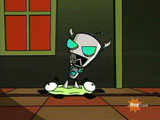
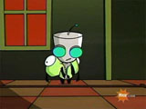
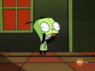
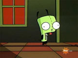
以上変身シーン。きゃわい〜〜〜〜ん。
それはそうと、凄いことを発見。といってもビックリしてるのはワシくらいなものだろうけど・・・
なんと、インベーダージムには・・・あのローマン・ダージ（Roman Dirge）も参加してるんですよ！！
うわああああ！と大興奮。なんたって好きな作家が二人も関わってるなんて失禁ものですよ。じょっぱー
この作家がどれだけ好きかは、この日記の背景にローマン・ダージのレノーアを使ってることからわかるってもんだ。
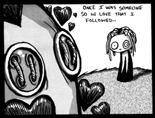
リビングデッドのゴスな女の子LENOREちゃんと彼女を愛する不死身のストーカーMr.GOSH。
ゴスカルチャーもどんどんメジャーシーンに登場してきてるんですなあ。はああ、たまんねえ。
LENOREも一時はアニメ化の話もあったのになあ。もう一度実現しないかなあ。
コンテンツ飼い殺しが得意なSONYじゃなくて、ZIMと同じくニックでいいから。
そーいえば、ZIMの3DはLightWaveで作られてるみたい。
って！パワパフやデクスターもじゃん！えっ、どこに？
少し体調をくずした。休日でよかったよ。ていうか、休日ということで気がゆるんだから疲れがでたのか？
てなわけでお出かけもせずに、今日はほとんど寝て過ごし・・・
たまってるビデオやらなんやらもなかなか消化できず。だいたいこの時期はヴェルタ・エスパーニャがやってるから、ますはそれ優先だものなあ。デクスターの新作もエゴトリップもビデオの肥やしになったまま。
かろうじてエアマスターの最終回を見る。原作は継続中だってのに、どうやって終わらせるのかと心配だったけど、それなりにうまくまとめた感じでいいね。強引な展開も迫力ある絵と動きと演出で、ムリヤリねじ伏せた感じがまたいい。ちゃんと作れば日本アニメも個性的で良いものが出来るんだなあ。
でもインベーダージムは凄いよ。米国アニメはマジで強い競争力を付けてきている。
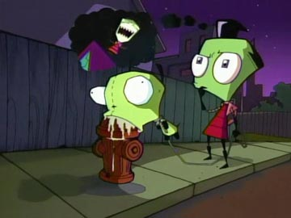
これってば、ゾイドあたりがやってる3ＤのトゥーンレンダリングやらCGやらを多用してるんだけど、とてもそうは思えないくらいよくなじんでいて、3Dがちっとも浮いてない。3Dの扱いはやっぱアチラの方がうまいのかなあ？カットも独特でアングルも凝っている。なによりスピード感があってすばらしく絵づくりのクオリティが高い。
ヴァスケスの病んで狂った雰囲気はそのままに、すっげえ面白いエンターテイメントに仕上がってるのがなにより素晴らしい。ゴスキュートとも呼ばれる、この手のキモカワイイキャラたちも嫌悪感なく動いていて完成度の高い作品だ。米国のアニメ界の底の深さを実感できる。
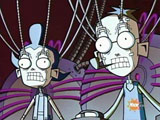
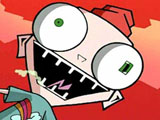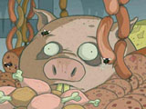
うーんヴァスケスしてる〜〜う。色もキレイなんだよなあ。
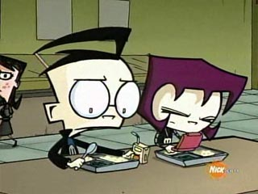
とりあえず、めっちゃ気になるのはDIBの妹のGAZ。ゴスっ娘〜〜！でもこいつってば、いっつもゲームばっかしてるんだよね。人嫌いで重度のゲームフリーク。ちなみにこいつらのパパはどうやらマッドサイエンティストらしく、当たり前のように狂ってます(笑) イカス！
とにかく、面白くて、クレイジーで、ダークで、カッコよくて、キモカワいくていい！でもニックなんだよねこれ・・・今第二シーズンってことらしいので話はけっこう貯まってる。こいつも日本で早くやって欲しいアニメです。
仕事のアップがすべて金曜に集中したため、えらいことに。ようやっと帰ってこれたら、録画しといた番組のビデオやら、うれしいお届けものとか、その他諸々たんまりとたまっていて、うれしやら、いつ見るんだよと泣きたくなったり、心は千々にみだれけり。
とりあえず、ビリマンを見る。
前回がおとなしかっただけに、今回はなかなか激しくてよかった。特にマンディの恋。まさかマンディのあんな顔が見られるとは・・・・。ほっぺた赤らめたとこは少しかわいかった。でもこの展開かよっ！日本なら「たまにはこんなお話」といってハートウォーミングな回にでもなりそうなものを・・これがビリマンか・・・
あと、サムライジャックモドキには笑った。
パワパフの新作ビデオももうじき発売。DVDを・・・とも思っていたが、ビデオをアマゾンで買う方が激しく安い（安すぎ）し早く入手できそうなんで、ついついそっちで注文しそうな気配。それともせっかくだからクリスマスまでとっておこうかな〜。
なにしろ、実はここんとこインベーダージムが気になって気になってしかたがないのだ。情報求めてあちこち暗躍中。でもとりあえず、睡眠を補充しとかないとな。
どーして、オレの周りのサンクスにはパワパフジューズが入荷してないんだよっ！
ホントにあるのか、みんなしてダマしてるんじゃないだろうか。そうだよ！トゥルーマンショーなんだ！マトリックスなんだ！はたから見て笑ってやがるんだ！きっとパワパフだってホントは新シリーズなんてやってないんだ！嘘なんだ、幻想なんだ、ホントはオレは植物人間でぜんぶそこで見てる夢なんだ！
などと、アホなことはいいかげんにしといてだ。
やっとPowerPopが届きました。
で、おまけについてたゲームにはまってた・・・・と。ふう。やれやれだぜ。